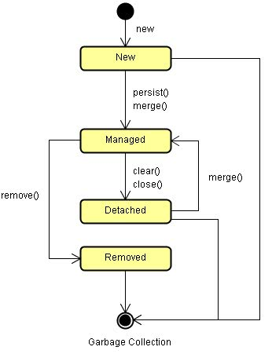

JPA中的Entity物件的狀態，可以分為四種：New、Managed、Detached、Removed。以下使用Application-Managed EntityManager爲例作說明：
- New
您直接使用new創建出Entity物件，例如在之前的例子中，
User類別所建立之實例，在還沒有使用persist()之前都是New狀態物件，這些物件還沒有與資料庫發生任何的關係，不對應於資料庫中的任一筆資料，沒有主鍵對映。
- Managed
當物件與資料庫中的資料有對應關係，並且與EntityManager實例有關聯而EntityManager實例尚未關閉（close），則它是在Managed狀態，具體而言，如果您將New狀態的物件使用EntityManager的persist()或merge()方法
加以儲存、合併，或是使用find()從資料庫載入資料並封裝為物件，則該物件為Managed狀態。
Managed狀態的Entity是在 PersistenceContext 的管理之中，Managed狀態的物件對應於資料庫中的一筆資料，物件的id值與資料的主鍵值相同，並且EntityManager實例尚未失效，在這期間您對物件的任何狀 態變動，在EntityManager實例關閉（close）或交易確認之後，資料庫中對應的資料也會跟著更新。
如果您將EntityManager實例關閉（close），則PersistenceContext失效，Managed狀態的物件會成為Detached狀態。
Managed狀態的Entity是在 PersistenceContext 的管理之中，Managed狀態的物件對應於資料庫中的一筆資料，物件的id值與資料的主鍵值相同，並且EntityManager實例尚未失效，在這期間您對物件的任何狀 態變動，在EntityManager實例關閉（close）或交易確認之後，資料庫中對應的資料也會跟著更新。
如果您將EntityManager實例關閉（close），則PersistenceContext失效，Managed狀態的物件會成為Detached狀態。
- Detached
Detached狀態的物件，其id與資料庫的主鍵值對
應，但脫離EntityManager實例
的管理，例如在使find()方法查詢到資料並封裝為物件之後，將EntityManager實例關閉，則物件由Managed狀態變為Detached狀
態，Detached狀態的物件之任何屬性變動，不會對資料庫中的資料造成任何的影響。
Detached狀態的物件可以使用merge()方法，使之與資料庫中的對應資料再度發生關聯，此時Detached狀態的物件會變為Managed狀態，也就是被PersistenceContext所管理。
Detached狀態的物件可以使用merge()方法，使之與資料庫中的對應資料再度發生關聯，此時Detached狀態的物件會變為Managed狀態，也就是被PersistenceContext所管理。
- Removed
如果您使用EntityManager實例的remove()方法刪除資料，Managed狀態的物件由於失去了對應的資料，則它會成為Removed狀
態，一個成為Removed狀態的物件不應該被繼續重用，您應該釋放任何參考至它的名稱，讓該物件在適當的時候被垃圾回收。
簡單的說，New與Detached狀態的物件未受EntityManager管理，也就是不在PersistenceContext管理之中，對這兩個狀態的物件作任何屬性變動，不會對資料庫中 的資料有任何的影響，而Managed狀態的物件受EntityManager管理，也就是在PersistenceContext管理之中，對物件的屬性變動，在EntityManager實例關閉（close）或交易確認之後，資料庫中對應的資料也會跟著更新。
